Руководство пользователя 4G Wi-Fi модема 81231FT
Внешний вид и описание
элементов управления
Внешний вид
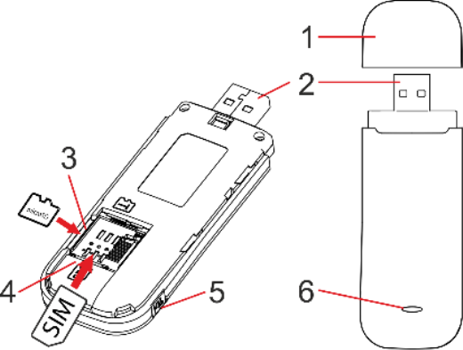
- Защитный колпачок USB-разъема
- USB-разъем
- Слот для карты памяти microSD
- Слот для SIM-карты MTC
- Разъем для подключения внешней антенны
- Индикатор состояния мобильной сети / Индикатор сети Wi-Fi
Описание световой индикации
- Горит красным – SIM-карта не установлена, не исправна, или соединение с мобильной сетью в данный момент не установлено
- Горит синим - соединение с мобильной сетью установлено, но передача данных отключена
- Мигает синим - соединение с мобильной сетью установлено, передача данных включена
- Горит зеленым – сеть WI-Fi включена, но нет подключенных клиентов
- Мигает зеленым – сеть WI-Fi включена, есть подключенные клиенты
- Горит или мигает голубым – для передачи данных используется Wi-Fi сеть и мобильная сеть
Как пользоваться модемом
Для установки модема следуйте указаниям пошаговой инструкции. Она поможет Вам убедиться, что Вы все сделали правильно.
Подготовка к работе
Шаг 1. Установка SIM/USIM-карты
- Снимите заднюю крышку устройства.
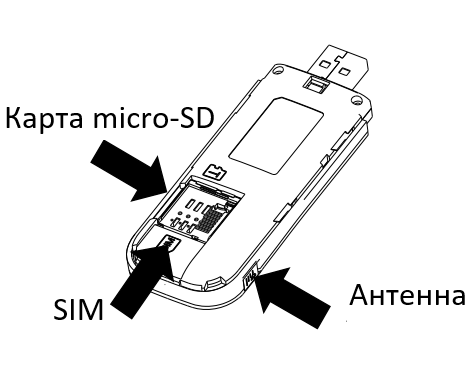
- Вставьте в 4G Wi-Fi модем SIM/USIM-карту, а также, при необходимости, micro-SDHC карту и подключите внешнюю антенну.
Убедитесь, что SIM/USIM карта и карта памяти корректно установлены в соответствующих слотах.
Внимание!
Работа устройства и программного обеспечения гарантируется только при использовании SIM/USIM-карты оператора «МТС».
- Установите заднюю крышку на место.
Идентификатор SSID и ключ беспроводной сети
Информация о названии Wi-Fi сети (SSID) и пароль для подключения размещены на стикере на задней крышке. Эти данные понадобятся Вам в случае, если Вы планируете подключиться к модему через беспроводную сеть Wi-Fi.
Примечание: рекомендуется перейти в раздел настроек Веб-интерфейса и изменить идентификатор SSID и ключ беспроводной сети.
Шаг 2. Подключение
Устройства Wi-Fi (например, смартфоны, планшетные ПК, игровые приставки или персональные компьютеры) можно подключить к Интернету через 4G Wi-Fi модем 81231FT. Процесс подключения зависит от операционных систем устройства Wi-Fi и ПК. Устанавливая подключение, следуйте инструкциям, приведенным в руководстве подключаемого устройства. Для доступа в Интернет посредством USB-подключения, установите драйвер 4G модема, следуя подсказкам операционной системы ПК.
Способ 1: Доступ в Интернет с помощью USB подключения
- Подключите 4G Wi-Fi модем в порт USB вашего ПК.
- При необходимости, установите драйвер устройства.
- В случае корректной установки подключение к сети Интернет установится автоматически.
Способ 2: Доступ в Интернет нескольких устройств по Wi-Fi
Внимание! Поддерживается подключение до 10 устройств одновременно.
- Убедитесь, что 4G Wi-Fi модем подключен к USB.
- Осуществите поиск доступных беспроводных сетей на устройстве, которое необходимо подключить к модему.
Примечание: в настройках подключаемого устройства должно быть установлено автоматическое получение IP-адреса.
- В списке беспроводных сетей найдите и выберите название (SSID) нужной сети. 4G Wi-Fi модем 81231FT имеет следующий формат имени: MTS81231FT_XXXX, где XXXX – уникальный набор символов для каждого устройства.
- Введите пароль для подключения к беспроводной сети.
- После успешного подключения к модему, откройте браузер на Вашем устройстве и введите в адресной строке http://connect.manager/ или http://192.168.1.1 для доступа к Веб-интерфейсу управления устройством. Также для доступа к настройкам 4G Wi-Fi модема 81231FT Вам необходимо ввести имя пользователя и пароль на странице авторизации. Имя пользователя для доступа по умолчанию – admin. Пароль для доступа по умолчанию – admin. Введите эти данные и нажмите кнопку «Войти».
Примечание: Вы можете переписать или запомнить название (SSID) беспроводной Wi-Fi сети и пароль. Эти данные понадобятся Вам в случае, если Вы планируете подключиться к модему через беспроводную сеть Wi-Fi.
Шаг 3. Установка программного обеспечения
В случае если Вы осуществляете подключение модема к ПК, для доступа к Веб-интерфейсу модема Вам потребуется установить программное обеспечение на Ваш компьютер.
Компьютеры под управлением операционной системы Microsoft® Windows®
Установка программного обеспечения 4G Wi-Fi модема 81231FT начнется автоматически, через некоторое время, после подключения устройства к USB-порту компьютера. Дождитесь запуска программы установки и следуйте ее подсказкам. Во время установки не разрывайте соединение устройства с компьютером. Если автоматическая установка приложения не началась, выполните установку вручную:
- Откройте окно «Компьютер». Для этого дважды щелкните на значке «Компьютер» на рабочем столе. Если на рабочем столе отсутствует значок «Компьютер», нажмите кнопку
 «Пуск» в левом нижнем углу экрана и найдите во всплывающем меню пункт «Компьютер».
«Пуск» в левом нижнем углу экрана и найдите во всплывающем меню пункт «Компьютер». - В окне «Компьютер» откройте вновь появившийся внешний диск (например, «CD-дисковод (Е:) 4G Wi-Fi модем).
- В открывшемся окне найдите файл «Autorun.exe» и запустите его.
- Далее следуйте подсказкам программы установки и не прерывайте соединение модема с компьютером.
Примечание: для OC Windows 8 и Windows 10 установка выполняется по аналогии.
Компьютеры под управлением операционной системы Apple Mac OS
По умолчанию, модем подключится к системе автоматически.
По желанию можно установить опциональную утилиту:
- Откройте диск «4G Wi-Fi модем», появляющийся при подключении модема к MacBook и находящийся среди ярлыков на рабочем столе.
- В случае отсутствия диска «4G Wi-Fi модем» на рабочем столе, нажмите на клавиатуре клавиши Shift-Cmd-A одновременно и далее в левой части открывшегося окна в разделе «Места» выберите диск «4G Wi-Fi модем».
- В открывшемся окне найдите установочный файл «4G Wi-Fi модем.pkg» и запустите его.
- Далее следуйте подсказкам программы установки и не разрывайте соединение модема с компьютером.
Веб-интерфейс 4G Wi-Fi модема 81231FT
Откройте веб-интерфейс 4G Wi-Fi модема 81231FT. Для этого соедините ПК с модемом по USB или Wi-Fi и в системе Windows найдите значок на рабочем столе своего компьютера и дважды щелкните по нему мышкой.
Внимание!
Если значок по каким-либо причинам отсутствует на рабочем столе или в панели быстрого доступа, веб-интерфейс можно открыть, набрав в интернет-браузере IP-адрес: http://192.168.1.1 или веб-адрес: http://connect.manager/.
Авторизация
Для доступа к настройкам 4G Wi-Fi модема 81231FT Вам необходимо ввести имя пользователя и пароль на странице авторизации. Имя пользователя для доступа по умолчанию – admin. Пароль для доступа по умолчанию – admin. Введите эти данные и нажмите кнопку «Войти».
Главная страница
Содержит ссылки на все разделы, а также информацию о текущем состоянии модема, сети и т. п. С главной страницы можно установить соединение с сетью Интернет и перейти в любой из разделов веб-интерфейса управления 4G модемом. Также главная страница отображает текущий статус подключения и скорость передачи данных. В случае если подключение к сети Интернет не установлено, нажатие переключателя Сеть МТС – Отключено приведет к подключению. В случае если подключение к сети Интернет установлено, нажатие переключателя Сеть МТС – Подключено приведет к отключению.
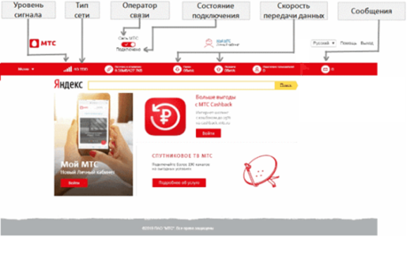
Внешний вид главной страницы веб-интерфейса Коннект-Менеджера
Строка состояния, языковая панель, кнопка «Выход».
Строка состояния отображает текущее состояние SIM/USIM-карты, текущий тип сети, уровень сигнала сети, количество подключенных по сети Wi-Fi клиентов, скорость передачи данных, а также отображает информацию о полученных SMS-сообщениях. Языковая панель позволяет быстро переключать язык интерфейса.
Кнопка «Выход» позволяет выйти из Веб-интерфейса и вернуться на страницу авторизации.
Доступ к дополнительным настройкам и опциям, открывается при выборе соответствующего пункта меню.
Сообщения
Переход в раздел Сообщения позволяет читать, отправлять и удалять SMS-сообщения. Ваши SMS сообщения хранятся в локальной памяти устройства.
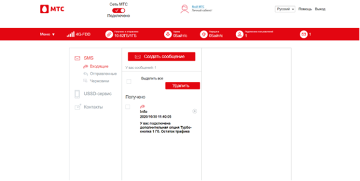
Прочесть/Ответить/Переслать
Для того, чтобы прочесть входящее сообщение (а также ответить на него или переслать), кликните по заголовку сообщения (Сообщения -> SMS -> Входящие). Далее откроется окно с текстом сообщения.
Создать
Если Вы хотите создать новое сообщение, то нажмите кнопку Создать сообщение (Сообщения -> SMS -> Создать сообщение). После чего откроется окно с полем для ввода номера получателя и полем для ввода текста сообщения. По завершении создания сообщения нажмите кнопку Отправить для отправки сообщения.
Удалить
Для удаления сообщения поставьте галочку напротив сообщения (Сообщения -> SMS -> Входящие) и нажмите значок корзины.
USSD-сервис
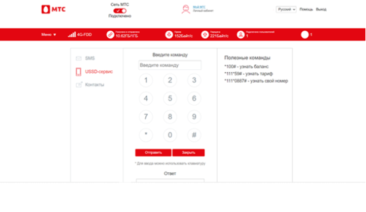
USSD-запрос служит для отправки USSD-команд. Для отправки USSD-команды введите USSD-команду в соответствующее поле и нажмите кнопку Отправить. Система известит Вас о состоянии вашего запроса. В этом разделе Вам доступны, например, следующие операции:
*100# узнать баланс – позволяет проверить текущее состояние Вашего баланса
*111*59# узнать тариф – позволяет узнать используемый тариф
*111*0887# узнать свой номер – позволяет узнать номер своего мобильного телефона.
Примечание:
Работа USSD невозможна в режиме работы Только 4G, Только 4G-TDD, Только 4G-FDD. Для использования USSD-команд необходимо переключиться в режимы Только 3G или Авто (Настройки -> Коммутируемое соединение-> Выбор сети-> Автоматический). Для изменения режима сети необходимо предварительно отключить соединение с Интернет.
Контакты
В этом разделе Вы можете создавать и удалять Ваши контакты. Также в этом разделе доступна отправка SMS сообщения выбранному контакту.
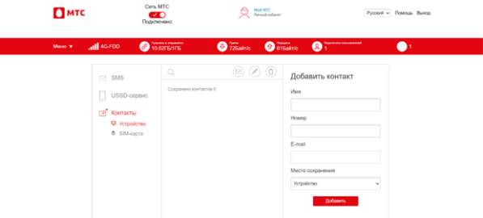
Создать
Для создания контакта в разделе Контакты (Сообщения-> Контакты) в окне Добавить контакт заполните всю необходимую информацию о контакте и затем нажмите кнопку Добавить. После этого контакт будет отображаться в разделе Контакты.
Удалить/Удалить все
Для того, чтобы удалить контакт, поставьте отметку напротив имени контакта и нажмите значок корзины. После этого контакт будет удален. Для удаления всех контактов разом выберите все контакты и нажмите значок корзины.
Сообщение
Для отправки сообщения поставьте отметку напротив имени контакта и нажмите значок конверта. В появившемся окне наберите текст сообщения и нажмите кнопку Отправить.
Примечание:
4G Wi-Fi модем 81231FT позволяет сохранять контакты в памяти устройства или на SIM/USIM-карте. Выберите необходимое место сохранения в окне Добавить Контакт.
Настройки
Этот раздел предназначен для управления работой модема. Здесь Вам доступны следующие настройки:
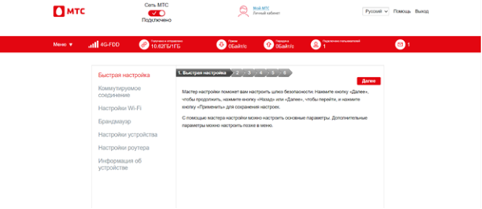
Быстрая настройка
С помощью данного мастера настроек можно быстро сконфигурировать основные параметры устройства (SSID, параметры безопасности Wi-Fi сети).
Настройки Wi-Fi
В этом подразделе настраиваются параметры Wi-Fi сети.
Брандмауэр
В разделе можно задать правила фильтрации портов, настроить перенаправление портов, а также включить или выключить функции UPnP и DMZ.
Настройки устройства
В этом подразделе представлена возможность управления паролем доступа к веб-интерфейсу, управление PIN-кодом SIM/USIM-карты, также Вы можете выполнить сброс настроек, перезагрузку устройства, обновление ПО устройства до более новой версии (при наличии), произвести настройку энергосбережения.
Настройки модема
Здесь Вы можете задать необходимые параметры работы устройства в локальной сети (IP-адрес, диапазон IP-адресов DHCP и т.д.).
Информация об устройстве
Здесь Вы сможете получить информацию об устройстве.
Примечание:
4G Wi-Fi модем 81231FT уже настроен для работы в сети «МТС». Не меняйте настройки сети без необходимости. Некорректные настройки сети могут привести к невозможности установления соединения модема с Интернетом.
Примеры изменения некоторых настроек.
Меню -> Настройки -> Коммутируемое соединение -> Выбор сети
В данном разделе доступны опции выбора режима сети.
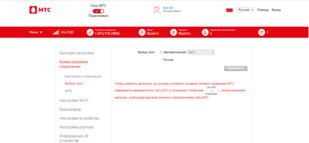
Выбор сети: Автоматический или Ручной.
По умолчанию установлен вариант Автоматический. Если выбрать режим Ручной и нажать на кнопку Поиск, будет осуществлен поиск работающих мобильных сетей, в результате поиска будет показан список, с помощью которого можно осуществить ручную регистрацию в сети оператора со статусом Доступно. При автоматическом выборе сети доступны следующие опции:
Выбор сети: Авто, Только 4G, Только 4G-TDD, Только 4G-FDD, Только 3G.
По умолчанию установлен вариант Авто. Если Вам необходимо, чтобы устройство работало только в одном из режимов: только 4G, только 4G-TDD, только 4G-FDD или только 3G, выберите соответствующую опцию.
Для изменения данных настроек необходимо предварительно отключить активное соединение с сетью МТС (передвинуть переключатель Сеть МТС в положение Отключено). После завершения настроек не забудьте снова подключиться к сети МТС (передвинуть переключатель Сеть МТС в положение Подключено).
Меню -> Настройки -> Коммутируемое соединение -> APN
В случае осознанной необходимости Вы можете вручную задать данные для нового APN, выбрав режим Ручной.
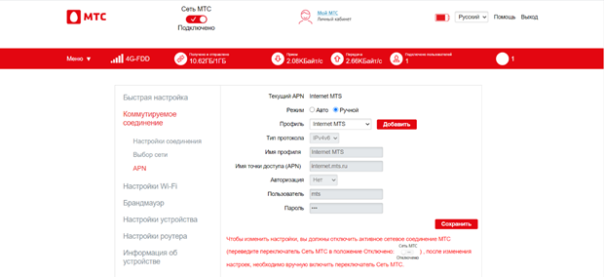
После этого нажмите на кнопку Добавить и заполните все поля.
Для активизации созданного APN профиля нажмите на кнопку Сохранить.
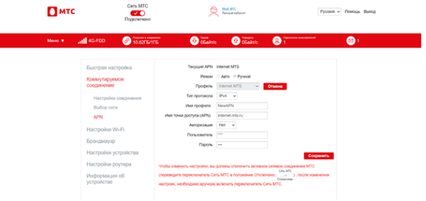
Для того, чтобы выбрать профиль по умолчанию, перейдите в режим Авто и нажмите Установить по умолчанию.
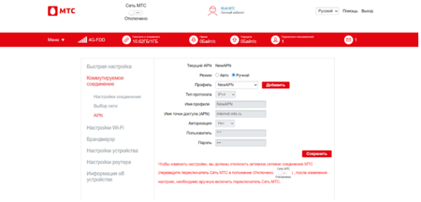
После завершения настроек не забудьте снова подключиться к сети МТС (передвинуть переключатель Сеть МТС в положение Подключено).
Меню -> Настройки -> Настройки Wi-Fi -> Фильтр MAC-адресов
В данном разделе Вы можете создать политики подключения внешних устройств по Wi-Fi: запрещать Wi-Fi модему подключать внешние устройства с определенными MAC-адресами.
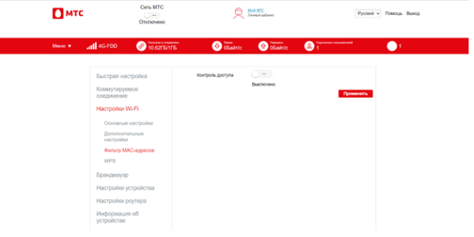
Включите функцию фильтра MAC-адресов, передвинув переключатель Контроль доступа в положение Включено и нажав кнопку Применить.
В открывшемся окне в нижнем списке мы видим MAC-адреса устройств, которые в данный момент времени подключены к модему.
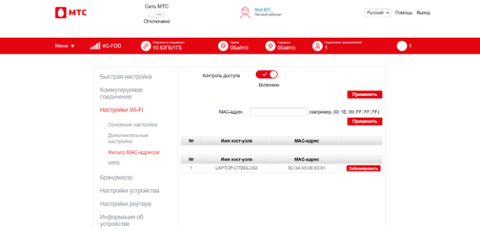
Если нажать на кнопку Заблокировать рядом с одним из подключенных устройств, то оно перемещается в верхний список и не сможет в дальнейшем подключиться к Wi-Fi модему.
Чтобы снять запрет на подключение, достаточно нажать на кнопку Удалить рядом с заблокированным устройством.
Вы также можете включить блокировку произвольного устройства, указав его MAC-адрес вручную в поле: MAC-адрес. Далее следует нажать на кнопку Применить под полем ввода MAC-адреса.
Внимание!
Информация, содержащаяся в этом руководстве, может быть изменена без дополнительного уведомления. Несмотря на меры, принятые для обеспечения точности содержания этого документа, вся содержащаяся здесь информация, а также утверждения и рекомендации не представляют собой никаких гарантий, явных или подразумеваемых. Для правильной и безопасной работы вашего устройства, пожалуйста, прочтите инструкции по безопасности, описанные в этом руководстве.